Huffman Compression Technique
This website uses Huffman Coding to compress data!
- Huffman Coding is a popular technique used for Lossless Data Compression.
Lossless Compression
- Lossless compression is a class of data compression algorithms that allows the original data to be perfectly reconstructed from the compressed data. Lossless compression methods are reversible. Examples of lossless compression include GZIP, Brotli, WebP, and PNG.
- Lossless Compression is preferred for text file compression, while Lossy Compression is generally preferred for audio, video, and image files.
- File formats like ZIP use Lossless compression, while formats like MP3 and JPEG use Lossy compression.
- Data compression ratio, also known as compression power, is a measurement of the relative reduction in size of data representation produced by a data compression algorithm. It is typically expressed as the division of uncompressed size by compressed size. Thus, a representation that compresses a file's storage size from 10 MB to 2 MB has a compression ratio of 10/2 = 5.
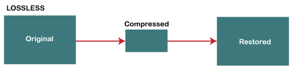
Comparison of lossless and lossy data compression.
Huffman Code
- A Huffman code is a particular type of optimal prefix code that is commonly used for lossless data compression. The process of finding or using such a code proceeds by means of Huffman coding, an algorithm developed by David A. Huffman.
- The output from Huffman's algorithm can be viewed as a variable-length code table for encoding a source symbol (such as a character in a file). The algorithm derives this table from the estimated probability or frequency of occurrence (weight) for each possible value of the source symbol.
- Prefix Codes mean the codes (bit sequences) are assigned in such a way that the code assigned to one character is not the prefix of code assigned to any other character. This is how Huffman Coding ensures no ambiguity when decoding the generated bitstream.
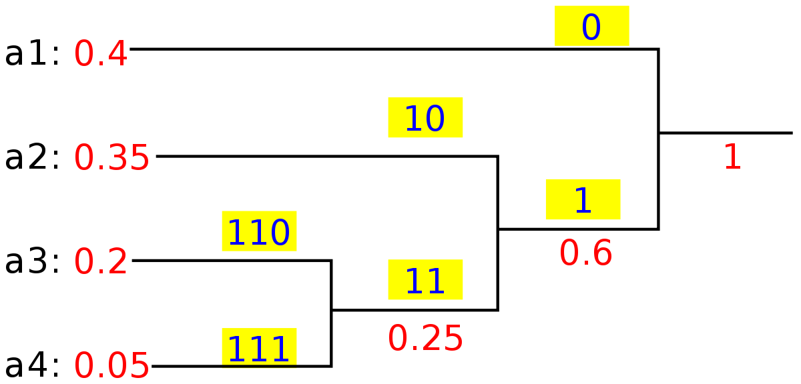
Illustration of Huffman coding process.
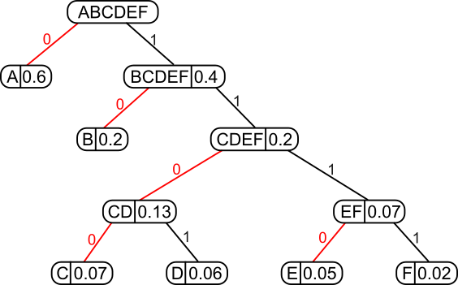
A Huffman coding tree built from this character frequency table: A=0.6, B=0.2, C=0.07, D=0.06, E=0.05, F=0.02.
Compression
- Huffman Encoding is an algorithm which uses frequency (or probability) features of symbols and a binary tree structure. It consists of the following 3 steps:
- Probability Calculation & Ordering the Symbols
- Binary Tree Transformation
- Assigning Codes to the Symbols
- We count the number of each symbol in the whole data, then we calculate the “probability” of each symbol by dividing that count by the total number of characters in the data. Since it’s an algorithm using probability, more common symbols — the symbols having higher probability — are generally represented using fewer bits than less common symbols. This is one of the advantageous sides of Huffman Encoding.
- As an example, for the following data having 5 different symbols as A B C D E, we have the probabilities as shown right:
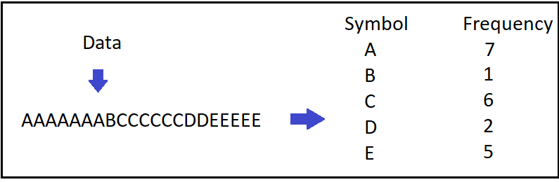
Symbol probabilities for A, B, C, D, E.
- Then we easily order the symbols according to their probabilities representing each symbol as a node and call that our “collection”. Now, we are ready to pass the next step.
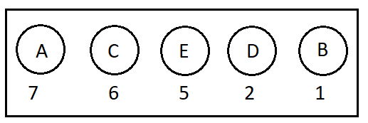
Ordered symbols based on probabilities.
- Binary Tree Transformation:
- From the collection, we pick out the two nodes with the smallest sum of probabilities and combine them into a new tree whose root has the probability equal to that sum.
- We add the new tree back into the collection.
- We repeat this process until one tree encompassing all the input probabilities has been constructed.
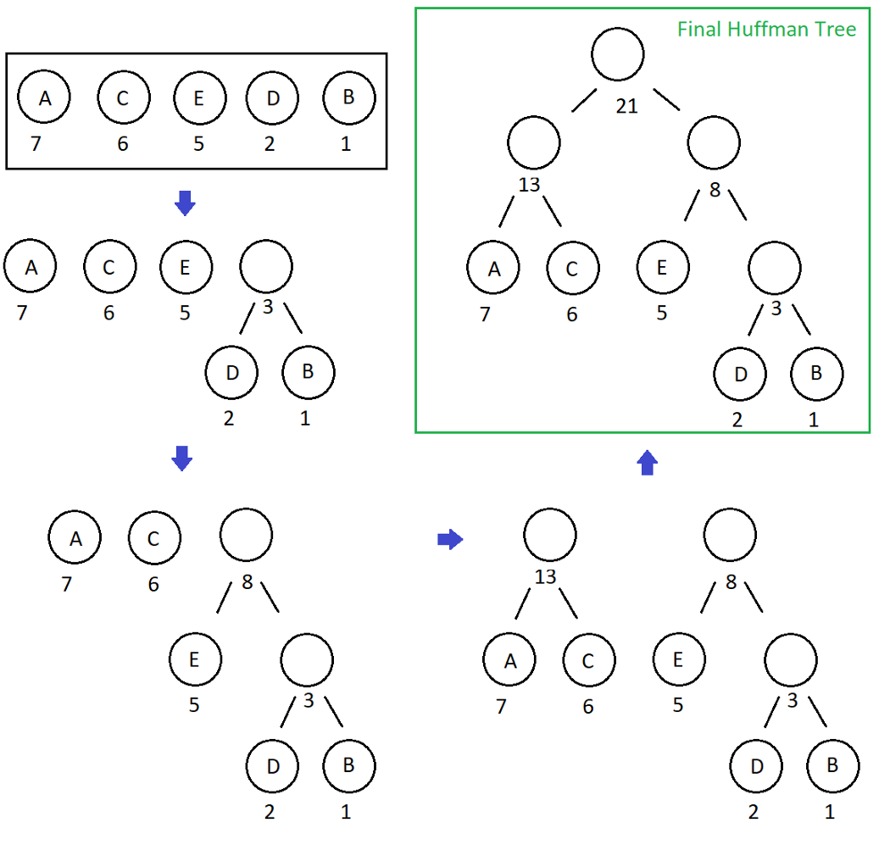
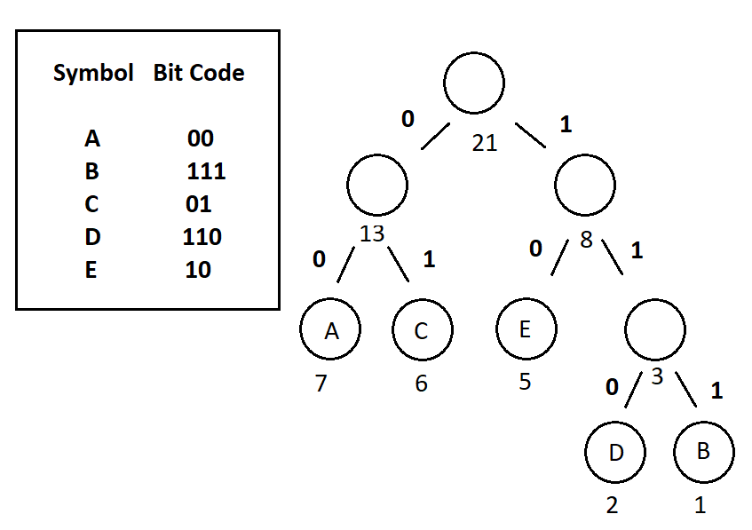
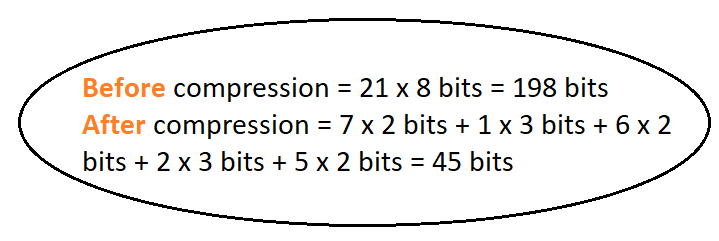
Steps in constructing the Huffman binary tree.
Implementation with Python:
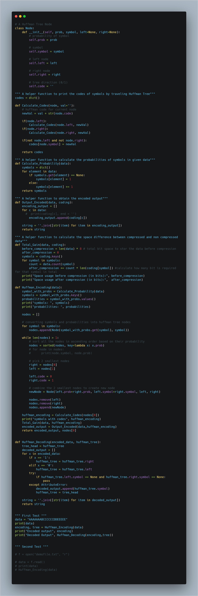
Python code for Huffman encoding.
Output:
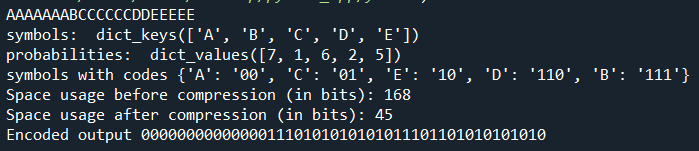
Output of the Huffman encoding Python code.
- As a conclusion, we see that the compression ratio does not change with the growing amount of data, and this ratio is close to 2:1. We can say that Huffman Encoding is an algorithm that compresses the data to its half size. Although it is old, it is still an effective compression algorithm!
De-compression
- Having our Binary Huffman Tree obtained during encode phase, decoding is a very simple process to perform.
- Let’s consider we have the same example with Huffman Encoding post, therefore we have AAAAAAABCCCCCCDDEEEEE as our initial data and 000000000000001110101010101011101101010101010 as encoded output with the following Huffman Tree:
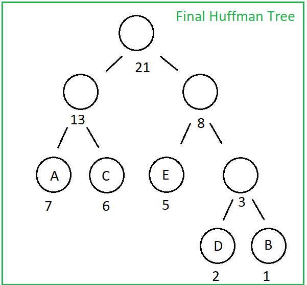
Huffman tree used for decoding.
- Now the only thing we should do is start from the head of Huffman Tree and from the beginning of the encoded data, each time we encounter 1 we go right and while we encounter 0, we go left through the Huffman Tree. When we reach a leaf node, we obtain the symbol! Then we just start again from the head of Huffman Tree while moving forward on encoded data.
- With a few lines added in huffman.py coming from Huffman Encoding & Python Implementation, we can easily implement Huffman_Decoding and here is the result:
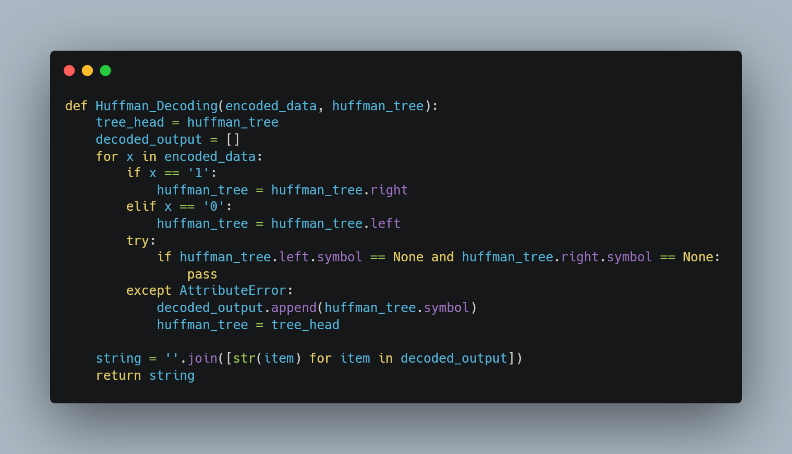
Python code for Huffman decoding.
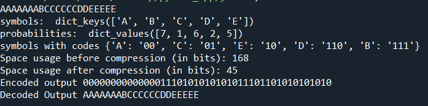
Result of the Huffman decoding Python code.
- Data compression is a topic of many applications and it has various different types of algorithms beside of “frequency based” Huffman Algorithm. You can check for “dictionary based” methods like LZ77 LZ78 LZW which are useful for image compression especially.